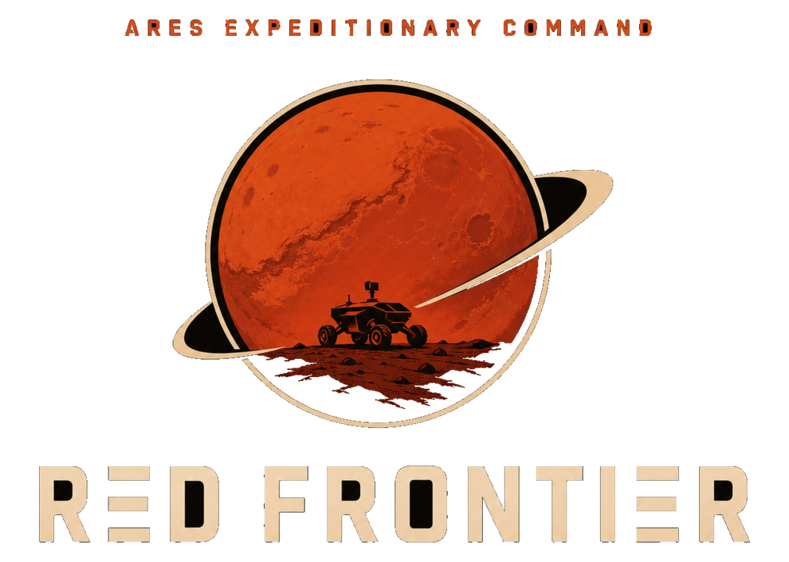
Red Frontier
“One human. A handful of machines. An entire planet that does not want you there.”
Fact Sheet
| Title | Red Frontier |
|---|---|
| Developer | [Your studio name] |
| Publisher | [Your studio name] |
| Platform | PC (Steam) |
| Release date | To be announced |
| Price | US $19.99 (10% launch-week discount) |
| Genres | Real-Time Strategy · Survival · Simulation |
| Players | Single-player |
| Languages | English (more to follow) |
| Store | Steam page — link goes here once live |
| Age rating | No mature content |
Pitches — copy & paste
One-liner (17 words)Red Frontier is a Mars survival strategy game about keeping one human alive with machines, industry and nerve.
Short pitch (≈50 words)Mars, 2066. One human, a handful of machines, and an entire planet that does not want you there. Command an autonomous rover fleet, build an industrial colony out of ice and rust, and forecast the dust storms before they strike — a hard-sci-fi survival strategy game where oxygen is the real clock.
Boilerplate (≈100 words)Red Frontier is a single-player real-time strategy and survival game set on Mars in the year 2066. You are the sole crew of a planetary survey claim: four sols of air, water and rations, and everything after touchdown is something you build. Command a fleet of autonomous rovers over queues, haul routes and automation rules; refine ore into steel and steel into machines; and read a living sky where storms travel as real systems and the dust carries lightning. Explore a planet that hides its wrecks, its supplies and its secrets until your machines find them. Oxygen kills in hours, water in days, food in weeks. Build in that order — and the Red Planet still has a vote.
Description
One human. A handful of machines. An entire planet that does not want you there.
Red Frontier is a Mars survival RTS about the arithmetic of staying alive. You land with a descent stage, two rovers and roughly four sols of reserves. From there the colony is a chain you forge link by link: ice becomes water, water becomes oxygen and food, ore becomes steel, and steel becomes the machines that keep the whole circle turning.
Rovers are the game’s hands. Orders queue, haul routes repeat, automation rules keep idle machines working, and the Rover Garage fast-charges, services and assembles rolling stock — including heavy cargo rovers built for the long seams. Care for them: parts wear out in the dust, batteries die in the cold, and a stranded rover goes dark until you bring it home.
Weather is a field, not a mood. Storm fronts sweep the claim with local intensity — a rover twenty meters from the pad can sit in clear air while the pad takes the full wall — and thick dust carries lightning that singes arrays, dumps batteries and buries anything left uncovered. Build the Weather Radar Station and the sky stops being a surprise: storm cells plot on the world map, forecasts extend, and you choose what gets bolted down.
And the planet rewards the curious. Seeded points of interest surface only when a rover finds them; wrecks can be cut apart and hauled home; Earth’s supply drops land under your transponder and start burying themselves the moment they touch. Distance is a resource. Dust is a clock.
“The Red Planet is patient. It can wait for your batteries to die.”
Key Features
- Keep one human alive on a world that kills with air, water and time — ice → water → oxygen → food, every tank on a timer
- Command a fleet of autonomous rovers: queueable orders, repeating haul routes, per-rover automation rules
- Build an industry from ore: mining, a Refinery that makes steel, a Workshop that makes motors, circuit boards and pipe
- A full service economy behind the machines — the Rover Garage fast-charges, services drivetrains and assembles new rovers from counted parts
- Travelling storm systems with lightning, dust that buries panels and rovers, and a Weather Radar Station that turns the sky into a forecast
- Explore points of interest the map never shows: salvage wrecks, race the dust to Earth supply drops, chart your claim on the world map
- A complete sol cycle with day and night, plus an ambient procedural soundscape — wind, radio, machinery, thunder
- Pause-friendly real-time play, autosaves, multiple slots — a hard planet with a forgiving journal
Pricing & Positioning
US $19.99 with a 10% launch-week discount ($17.99 at release). The price point follows the premium indie strategy anchor set by titles such as Dyson Sphere Program ($19.99) and Mars First Logistics ($19.99), beneath publisher-backed colony builders (Surviving Mars, Aven Colony, $29.99 class).
Quote, embed and review permissions are granted for editorial coverage. All imagery below is official key art or in-game capture.
Media
Key art — Steam capsule compositions (logo included):

{kind=link}
{kind=link}
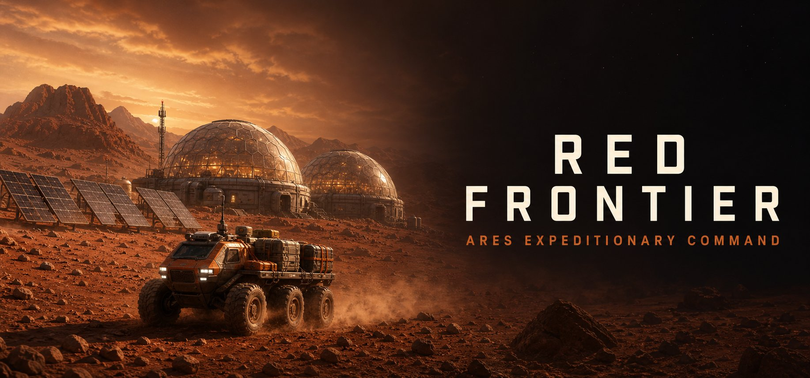
{kind=link}
{kind=link}
{kind=link}
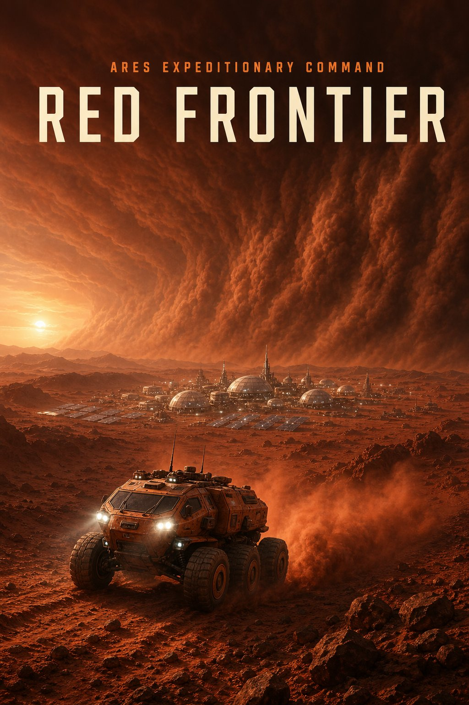
{kind=link}
{kind=link}
{kind=link}

{kind=link}
{kind=link}
Logo & icon:
{kind=link}
{kind=link}
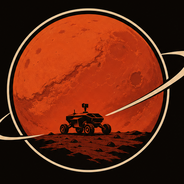
{kind=link}
{kind=link}
Screenshots (in development capture):
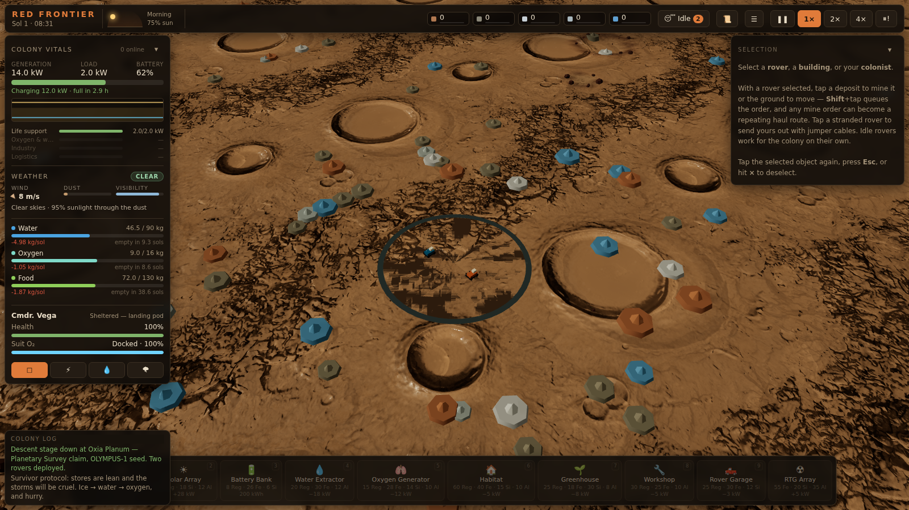
{kind=link}
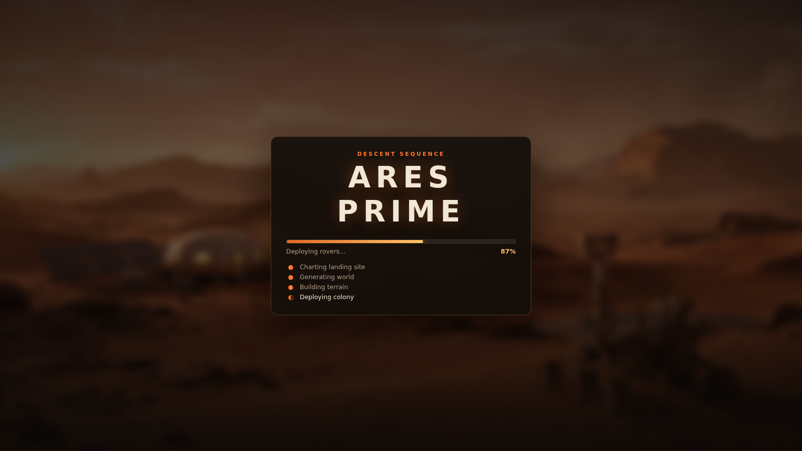
{kind=link}
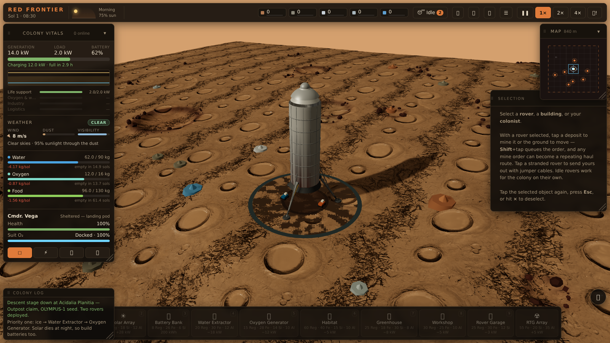
{kind=link}
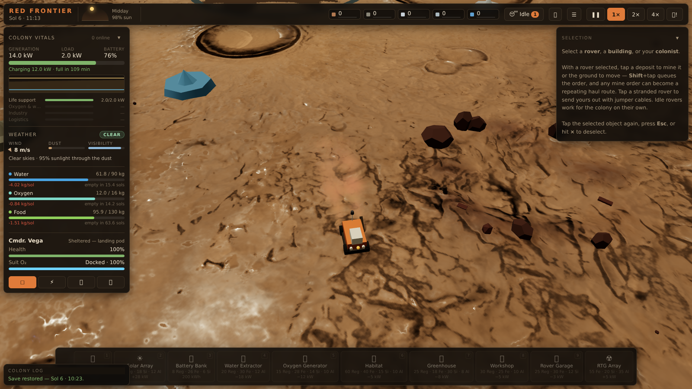
{kind=link}
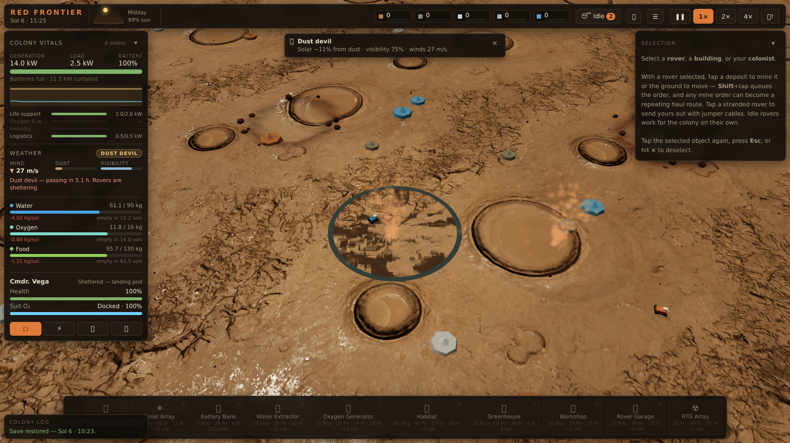
{kind=link}
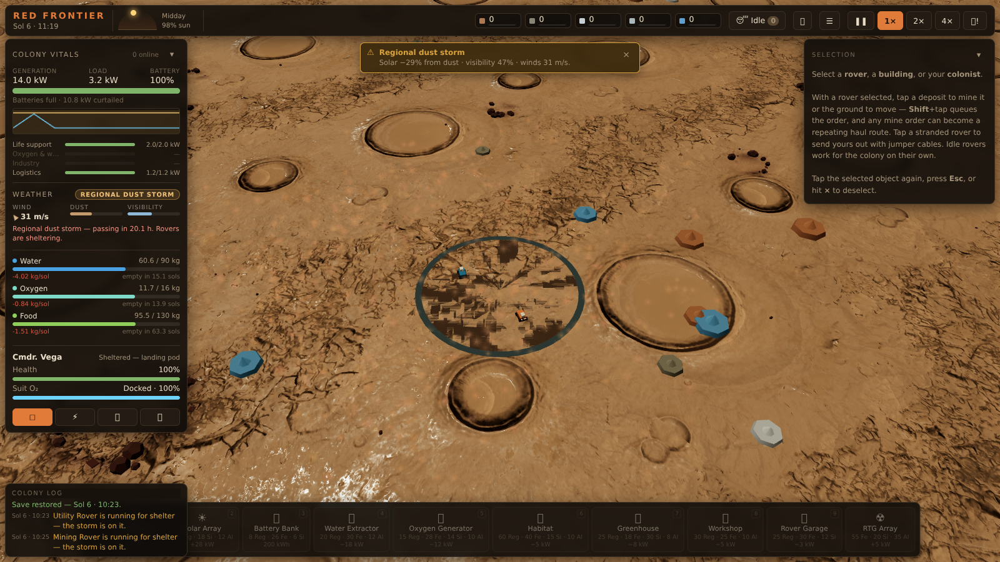
{kind=link}
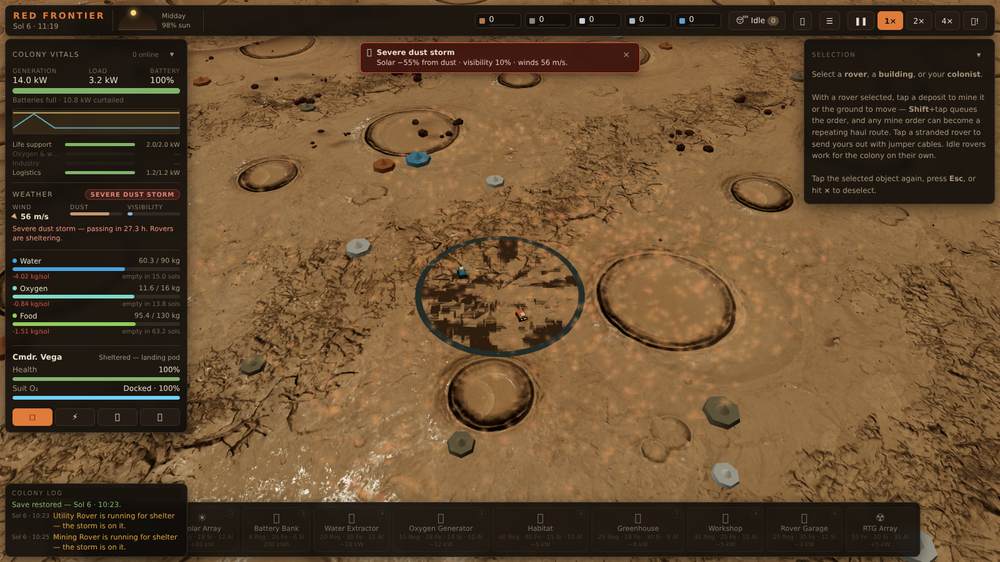
{kind=link}
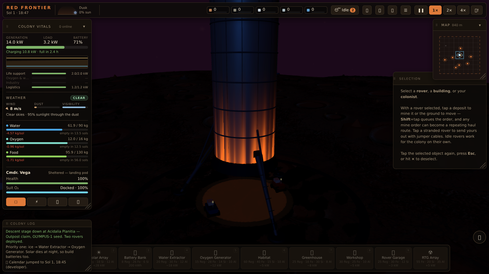
{kind=link}
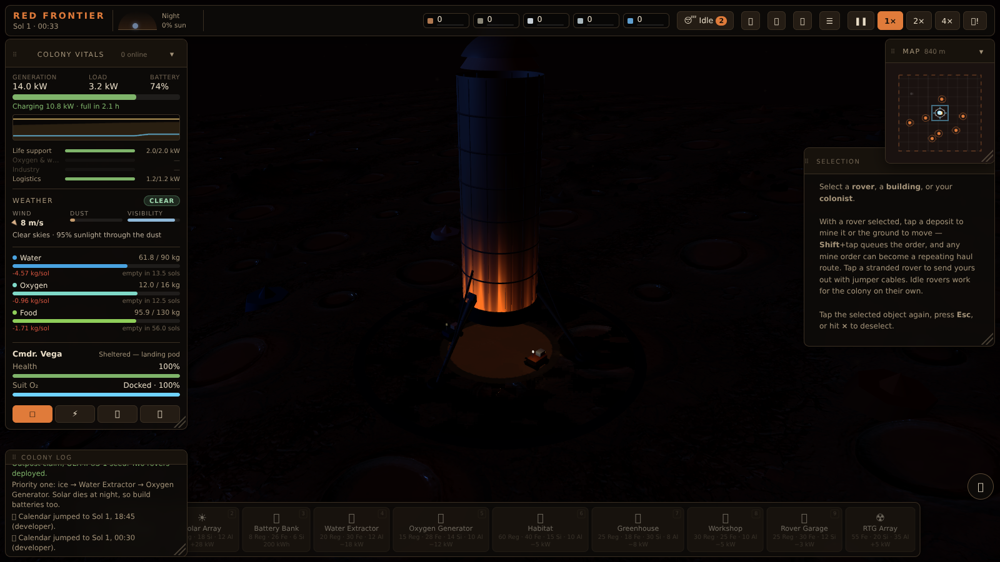
{kind=link}
Contact
| Press / business | [press@yourstudio.example] |
|---|---|
| Review keys | Available through the Steam curator program, or by email |
| Website / socials | [Your links here] |